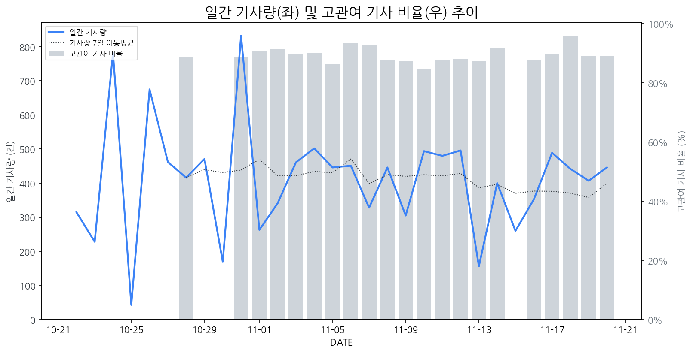

1
시장 활동 지표
기사량 추세 & 이상 징후 탐지
시장의 '전체 기사량'이 평소보다 비정상적으로 급증했는지(Spike)를 차트로 확인하고, LLM이 분석한 급등의 핵심 원인을 파악할 수 있음

고관여 기사란? 산업 연관 키워드로 수집된 기사들 중 디스플레이 키워드에 가중치를 반영하여 도출된 관련성 높은 기사
수집된 기사 수 (2025-11-20)
446
+186% WoW
기사량 변동 수준 (7일 이동평균 대비)
±6.7% 이하
2
오늘의 키워드
급격한 관심 ↑, 주목해야 할 키워드
1
폴더블
+3.2σ
삼성디스플레이의 폴더블 시장 선도 및 기술 리더십 강조 보도가 급증세를 이끌었습니다.
Related Metrics
금일 언급량: 12, 전일 대비: +4
Interpretation
폴더블 시장 성장 기대감 증대
Next Step
'폴더블' 관련 상세 기사 및 경쟁사 반응 모니터링
2
삼성전자
+2.0σ
메모리 시장 점유율 탈환과 HBM 기술력 부각, 역대 최대 매출 달성이 주가 급등을 견인했습니다.
Related Metrics
금일 언급량: 28, 전일 대비: +14
Interpretation
삼성전자의 HBM 경쟁력 강화는 전체 시장 성장을 기대하게 합니다.
Next Step
핵심 토픽 'Foldable_Display_Topic' 관련 신호입니다. 3번 섹션(키워드 감성분석)에서 해당 토픽의 감성 변동을 교차 확인하세요.
3
xr
+2.0σ
삼성디스플레이의 XR 분야 집중 투자 및 신규 XR 글래스 출시 루머로 관련 산업 관심 고조.
Related Metrics
금일 언급량: 8, 전일 대비: +8
Interpretation
XR 디스플레이 신규 수요 기대
Next Step
'xr' 관련 상세 기사 및 경쟁사 반응 모니터링
4
엔비디아
+1.9σ
엔비디아의 놀라운 실적 발표와 HBM 관련주 상승이 시장의 관심을 집중시켰습니다.
Related Metrics
금일 언급량: 16, 전일 대비: +9
Interpretation
AI 시장 성장 수혜 기대
Next Step
'엔비디아' 관련 상세 기사 및 경쟁사 반응 모니터링
3
실시간 Risk 키워드
경계해야 할 시그널 탐지
특정 토픽의 부정 감성 점수가 급등할 때 이를 즉시 탐지하고, "근거 기사" 링크를 통해 리스크의 실체를 빠르게 파악할 수 있음
키워드 분석 결과, 오늘은 걱정할 만한 하락 신호가 없습니다. (부정 언급량 변화: +1.5σ 이내)
4
주요 이벤트 모니터링
실시간 산업 동향 파악을 위한 주요 활동
최근 발생한 주요 기업들의 신제품 출시, 투자 등 주요 이벤트를 제공하여 매일 경쟁사 동향을 확인할 수 있음
삼성디스플레이 이청 대표는 폴더블과 XR(확장현실)을 미래 디스플레이 시장의 주 전장으로 보고, 견고한 기술 장벽 구축의 중요성을 강조했습니다.
Impact
이 발언은 폴더블 및 XR 디스플레이 기술 경쟁이 심화될 것이며, 관련 시장에서 기술 선도 기업의 우위가 더욱 공고해질 가능성을 시사합니다.
Next Step
경쟁사 역시 폴더블 및 XR 기술 개발에 박차를 가하고 있으므로, 차별화된 기술 혁신과 안정적인 생산 능력 확보에 집중해야 합니다.
롯데에너지머티리얼즈, 제이스텍 등 2차전지 관련 기업들의 주가가 상승세를 보이며 시장의 주목을 받고 있습니다. 이는 2차전지 산업의 성장 가능성과 관련 기업들의 기술력에 대한 긍정적인 평가를 반영하는 것으로 해석됩니다.
Impact
2차전지 소재 및 부품 공급망 내에서 디스플레이 제조 기업과의 연관성을 재조명하게 되며, 잠재적으로는 2차전지 기술이 디스플레이 패널 제조 공정이나 신규 디스플레이 기술 개발에 활용될 가능성을 시사합니다.
Next Step
2차전지 소재 기업들의 기술 동향 및 공급망과의 연계 가능성을 파악하고, 잠재적인 기술 협력 또는 신규 사업 기회를 탐색해야 합니다.
카타르에서 e스포츠 산업이 빠르게 성장하며 게이밍 PC에 대한 수요가 증가하고 있습니다. 이는 고성능 디스플레이 시장에 긍정적인 영향을 미칠 것으로 예상됩니다.
Impact
카타르의 e스포츠 시장 성장은 고주사율, 빠른 응답 속도, 높은 해상도를 갖춘 게이밍 디스플레이 패널의 수요 증가로 이어져 관련 시장의 성장을 견인할 수 있습니다.
Next Step
카타르 및 중동 지역의 e스포츠 행사 후원 및 게이밍 디스플레이 제품 마케팅 강화를 고려해야 합니다.
향후 4년 이내에 태블릿 및 노트북용 IT OLED 패널 출하량이 현재보다 2배 이상 증가할 것으로 예상됩니다. 이는 IT 기기 시장에서 OLED 채택이 가속화될 것임을 시사합니다.
Impact
IT 기기 시장에서 OLED 채택 증가는 LCD 대비 OLED 패널의 수요 증가와 기술 경쟁 심화를 야기하며, 디스플레이 제조사들에게 새로운 성장 기회와 도전을 동시에 제공할 것입니다.
Next Step
OLED 생산 능력 확충 및 IT 기기용 고성능 OLED 패널 개발에 대한 투자 확대와 함께, 경쟁사 대비 차별화된 기술 및 가격 경쟁력 확보 방안을 모색해야 합니다.
5
지금 주목해야 할 뉴스 TOP 3
삼성D 이청 “견고한 기술 장벽 구축하자…폴더블·XR 주 전장될 것”
삼성디스플레이 대표이사 사장은 19일 충남 아산시 삼성디스플레이 아산 사업장에서 직원 소통행사 ‘디톡스’를 열고 올해 주요 경영실적과 향후 전망을 공유했다.
HBM(고대역폭메모리) 관련주, '맑음' 레이저쎌·삼성전자·SK하이닉스·고...
로컬 요약 모델 실행 중 오류 발생: 제목을 클릭하여 기사 전문을 확인할 수 있습니다.
[AT 산업 단신] 삼성전자·LG전자·삼성디스플레이·한미반도체·태광그...
로컬 요약 모델 실행 중 오류 발생: 제목을 클릭하여 기사 전문을 확인할 수 있습니다.